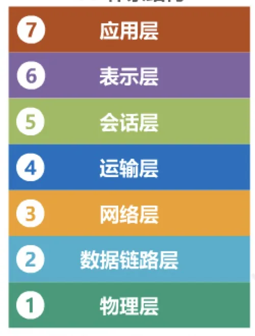
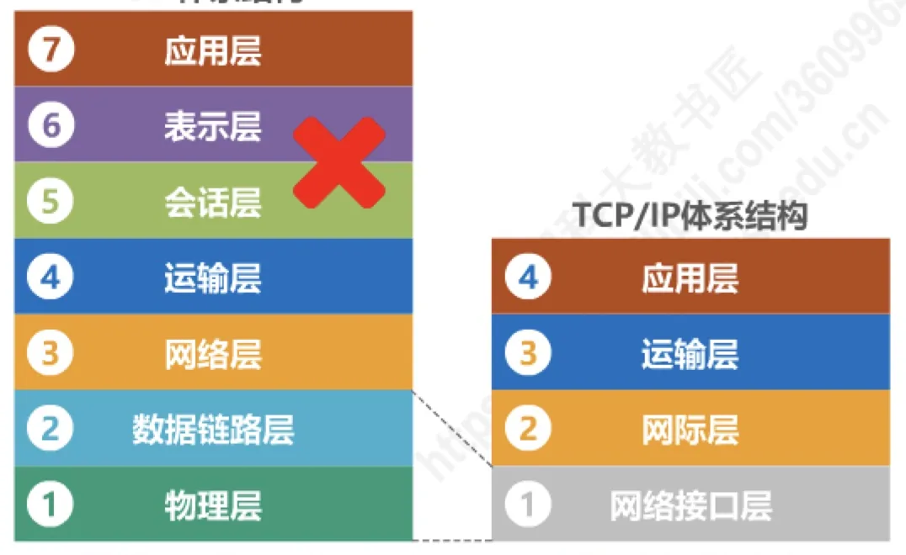
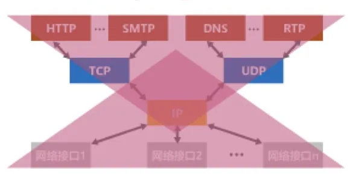

计算机通信与网络 · 第 1 章 概述
1.6 计算机网络体系结构（1）—常见的计算机网络体系结构
到此为止，我们已经知道了网络由什么组成、数据怎样交换、用什么指标衡量。但两台主机之间要真正通信，还需要一套共同遵守的规则，而且这些规则不能是一锅粥 —— 它们必须被组织成层次分明的结构，这就是网络体系结构。本节先看清三种常见的体系结构：OSI、TCP/IP 和教学用的原理体系结构；随后的三节依次讲分层的必要性、分层思想的举例和体系结构中的专用术语。
1. OSI 七层体系结构
最早试图把网络通信的规则系统化的是国际标准化组织 ISO 提出的开放系统互连参考模型 OSI/RM（Open Systems Interconnection Reference Model），通常简称 OSI 体系结构。它把网络通信的全部功能自上而下划分为七层：
- 应用层；
- 表示层；
- 会话层；
- 运输层；
- 网络层；
- 数据链路层；
- 物理层。
其中表示层负责处理数据的表示方式（如格式转换、加密解密、压缩解压），会话层负责管理与协调通信双方的会话过程 —— 这两层在实际运行的因特网中并没有单独设立，是 OSI 模型特有的。OSI 是法律上的国际标准：它由 ISO 正式制订、被各国认可，但由于制订过程缓慢、模型过于复杂，实践中并没有被广泛实现。

2. TCP/IP 体系结构
与 OSI 相对的是因特网实际使用的 TCP/IP 体系结构。它只有四层：
- 应用层；
- 运输层；
- 网际层（相当于 OSI 的网络层）；
- 网络接口层（相当于 OSI 的数据链路层与物理层）。
TCP/IP 把 OSI 中的会话层、表示层的功能交给应用程序自己处理，把数据链路层和物理层合并成网络接口层，因此结构更简单、更贴近工程实现。它是事实上的国际标准 —— 虽然没有哪一个国际组织正式颁布它，但因为全世界都在用，它成了真正通行的标准。

TCP/IP 体系结构最核心的一层是网际层，它由 IP 协议支撑。IP 协议的地位可以用两句话来概括，这两句话也正是 TCP/IP 成功的关键：
- Everything over IP：IP 协议可以为各种网络应用提供服务 —— 无论是网页、邮件、域名解析还是实时音视频，都可以承载在 IP 之上；
- IP over everything：使用 IP 协议互连各种不同的网络接口 —— 不管是哪种底层网络技术，只要能在其上跑 IP，就可以接入因特网。
换句话说，IP 协议像一根「细腰」，上面连着五花八门的应用，下面接着五花八门的网络技术 —— 这正是因特网能够不断接纳新技术、不断扩张的原因。

3. 原理体系结构
OSI 有七层、TCP/IP 只有四层，直接拿其中任何一个来讲课都不方便：前者过于繁琐，后者把数据链路层和物理层合并在一起，很多细节讲不清楚。因此教材采用了一种折中的 原理体系结构，共五层：
- 应用层；
- 运输层；
- 网络层；
- 数据链路层；
- 物理层。
它相当于把 TCP/IP 的网络接口层重新拆成数据链路层和物理层，因此既保留了 TCP/IP 的实用骨架，又能把每一层的问题讲透，适于教学。本课程后面各章基本就是自下而上逐层展开的：第 2 章讲物理层，第 3 章讲数据链路层，第 4 章讲网络层，第 5 章讲运输层，第 6 章讲应用层。
本节小结
- OSI 体系结构分七层（物理层、数据链路层、网络层、运输层、会话层、表示层、应用层），是法律上的国际标准，但过于复杂，实践中未被广泛实现；
- TCP/IP 体系结构分四层（网络接口层、网际层、运输层、应用层），是事实上的国际标准；它的核心是网际层的 IP 协议，其地位概括为 Everything over IP 与 IP over everything；
- 原理体系结构分五层（物理层、数据链路层、网络层、运输层、应用层），把 TCP/IP 的网络接口层拆开，既实用又适于教学，是本课程采用的模型；
- 后续内容按「分层的必要性 → 分层思想举例 → 专用术语」逐步展开，再自下而上逐层学习各层功能。